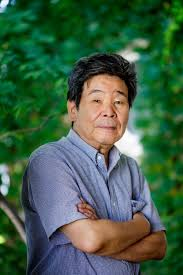
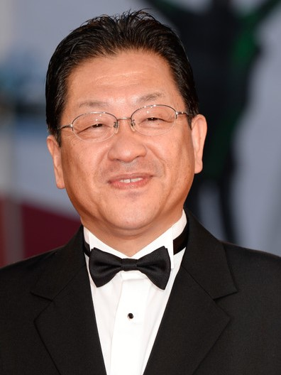
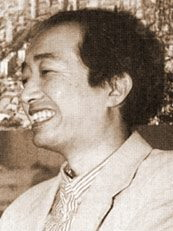
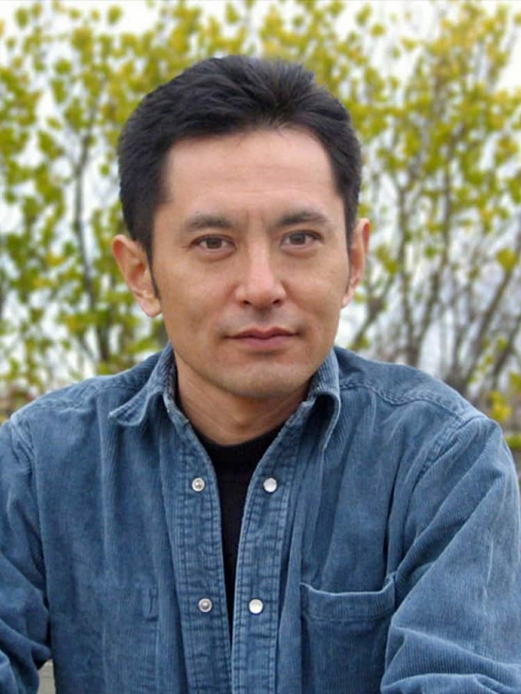
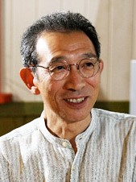

Ο Χαγιάο Μιγιαζάκι (ιαπωνικά: 宮崎 駿, Miyazaki Hayao), γεννημένος στις 5 Ιανουαρίου του 1941 στο Τόκιο της Ιαπωνίας, είναι ο διαπρεπής σκηνοθέτης πολλών γνωστών και δημοφιλών ταινιών κινουμένων σχεδίων (anime).
Ο Μιγιαζάκι αν και ξεκίνησε να παρουσιάζει δείγματα της δουλειάς του ήδη από τη δεκαετία του 1970, παρέμενε σχετικά άγνωστος στη δύση μέχρι το 1999 που η Miramax διένειμε στις Η.Π.Α και τον υπόλοιπο κόσμο την ταινία του Πριγκίπισσα Μονονόκε. Εκείνη την εποχή οι ταινίες του Μιγιαζάκι ήταν ήδη εμπορικές και καλλιτεχνικές επιτυχίες στην πατρίδα του την Ιαπωνία αλλά και στην υπόλοιπη ανατολική Ασία. Το Spirited Away (2001) είναι η πιο επιτυχημένη εμπορικά ταινία όλων των εποχών στην Ιαπωνία, ενώ στην ίδια θέση είχε βρεθεί παλιότερα και η Πριγκίπισσα Μονονόκε.
Οι ταινίες του Μιγιαζάκι συχνά περιστρέφονται γύρω από κοινά θέματα, όπως η σχέση των ανθρώπων με τη φύση και την τεχνολογία και η δυσκολία επικράτησης μιας ειρηνιστικής δεοντολογίας. Οι πρωταγωνίστριές του είναι συνήθως ανεξάρτητα και δυναμικά κορίτσια ή νεαρές γυναίκες, ενώ οι κακοί έχουν αμφισήμαντους χαρακτήρες και κάποια καλά στοιχεία.
Συνιδρυτής Toshio Suzuki
Ο Τόσιο Σουζούκι (ιαπωνικά: 鈴木 敏夫, Suzuki Toshio) γεννημένος στις 19 Αυγούστου του 1948 είναι ο διευθύνων παραγωγός και συνιδρυτής του Studio Ghibli. Διετέλεσε πρόεδρος του στούντιο από το 2005 μέχρι το 2008. Ο Σουζούκι είναι γνωστός ως ένας από τους πιο επιτυχημένους παραγωγούς της Ιαπωνίας μετά την τεράστια εμπορική επιτυχία (στην Ιαπωνία) πολλών ταινιών του Studio Ghibli.
Ο Σουζούκι έπεισε τον Μιγιαζάκι να μετατρέψει το manga του "Nausicaä of the Valley of the Wind" σε ταινία, και μαζί ίδρυσαν το Studio Ghbli μετά το πέρας της ταινίας.
Σύμφωνα με τον Χαγιάο Μιγιαζάκι, "Χωρίς τον Κο Σουζούκι, δε θα είχε υπάρξει Studio Ghibli." Αποφοίτησε από το Πανεπιστήμιο του Keio με πτυχίο στη Φιλολογία.

Isao Takahata Συνιδρυτής
Ο Ισάο Τακαχάτα (ιαπωνικά: 高畑 勲 Takahata Isao) γεννημένος σις 29 Οκτωβρίου του 1935) είναι Ιάπωνας σκηνοθέτης ταινιών, σχεδιαστής κινουμένων σχεδίων, σεναριογράφος και παραγωγός, που έχει κερδίσει διεθνή αναγνώριση για το έργο του ως σκηνοθέτης ταινιών anime.
Ο Τακαχάτα αποφοίτησε από το Πανεπιστήμιο του Τόκυο με πτυχίο στη Γαλλική Φιλολογία το 1959, και λίγο αργότερα γνώρισε τον Μιγιαζάκι και σκηνοθέτησε την πρώτη του ταινία μεγάλου μήκους "Hols: Prince of the Sun". Αντίθετα από τους περισσότερους σκηνοθέτες κινουμένων σχεδίων, ο Τακαχάτα δε σχεδιάζει. Σύμφωνα με τον Χαγιάο Μιγιαζάκι, "Η μουσική και το διάβασμα είναι τα χόμπυ του".
Συνιδρυτής Yasuyoshi Tokuma
Ο Tokuma Yasuyoshi (γεννημένος στις 25 Οκτωβρίου του 1921, πέθανε στις 20 Σεπτεμβρίου 2000) ήταν παραγωγός και πρόεδρος του Tokuma Shoten και του ομίλου Tokuma, καθώς και σε μια χρονική στιγμή της εταιρείας Daiei Motion Picture Company, Studio Ghibli και επιβλέπων στο μητροπολιτικό μουσείο του Τόκιο της φωτογραφίας.
O Tokuma έγινε πρόεδρος της Tokuma Shoten, της μητρικής εταιρείας Studio Ghibli, το 1954. Πριν γίνει πρόεδρος, είχε εργαστεί ως δημοσιογράφος για το Yomiuri Shinbun και ως πρόεδρος άλλου τυπογραφείου. Το Tokuma παρήγαγε πολλές ταινίες ενώ ήταν πρόεδρος, συμπεριλαμβανομένων όλων των ταινιών του Studio Ghibli εκτός από το Grave of the Fireflies.
Ο Tokuma πέθανε σε ένα νοσοκομείο του Τόκιο την Τετάρτη 20 Σεπτεμβρίου 2000. Ήταν 78 χρονών.

Koji Hoshino Πρόεδρος
Ο Koji Hoshino (γεννημμένος 7 Μαΐου 1956) είναι πρώην πρόεδρος της Walt Disney Ιαπωνίας και από την 1η Φεβρουαρίου 2008 Εκτελεστικός Διευθυντής και Πρόεδρος του Studio Ghibli.Πήρε τη θέση από τα χέρια του Tosio Suzuki, ο οποίος αποφάσισε να παραδώσει την προεδρία του επειδή ο Hoshino βοήθησε να πουλήσει ταινίες Ghibli από το 1996 και βοήθησε να κυκλοφορήσει η ταινία "Πριγκίπισσα Μονονόκε" στις ΗΠΑ.

Animator Yoshifumi Kondō
Ο Yoshifumi Kondō (近藤 喜 文, 31 Μαρτίου 1950 - 21 Ιανουαρίου 1998) ήταν Ιάπωνας Animator που εργάστηκε για το Studio Ghibli τα τελευταία χρόνια του. Ο Κόντο σκηνοθέτησε την κινούμενη ταινία Whisper of the Heart και αναμενόταν να γίνει ένας από τους κορυφαίους σκηνοθέτες του Studio Ghibli, μαζί με τους Hayao Miyazaki και Isao Takahata, και να γίνει ο τελικός διάδοχός τους.
O Kondō πέθανε από αορτική ανατομή το 1998. Ο θάνατός του λέγεται ότι προκλήθηκε από υπερβολική εργασία και φαίνεται να είναι ο κύριος λόγος για την πρώτη ανακοίνωση της αποχώρησης του Hayao Miyazaki το 1998. Αν και ο Miyazaki επέστρεψε αργότερα στο Studio Ghibli, επηρέασε τον Miyazaki να εργάζεται με πιο χαλαρό ρυθμό.

Gorō Miyazaki Animator
Ο Gorō Miyazaki (宮 崎 吾 朗 ,γεννημένος στις 21 Ιανουαρίου 1967) είναι Ιάπωνας σκηνοθέτης και κηπουρός. Είναι ο γιος του Hayao Miyazaki. Περιγραφόμενος ως "απρόθυμος" να ακολουθήσει την καριέρα του πατέρα του, ο Gorō αρχικά εργάστηκε ως κηπουρός για πολλά χρόνια πριν εισέλθει στο χώρο του κινηματογράφου. Έχει σκηνοθετήσει δύο ταινίες, Tales from Earthsea (2006) και From Up on Poppy Hill (2011).
Animator Hiromasa Yonebayashi
Ο Hiromasa Yonebayashi (米林 宏昌, γεννημένος στις 10 Ιουλίου 1973) είναι Ιάπωνας animator και σκηνοθέτης. Μετά το σκηνοθετικό του ντεμπούτο με το Studio Ghibli (The Secret World of Arrietty), έγινε ο νεότερος σκηνοθέτης ταινίας που παράγεται από το στούντιο. Ήταν υποψήφιος για το βραβείο Όσκαρ καλύτερης ταινίας κινουμένων σχεδίων το 2015 για τη δεύτερη ταινία του, When Marnie Was There.
Katsuya Kondō Animator
Ο Katsuya Kondō (近藤 勝 也, γεννημένος στις 2 Ιουνίου 1963) είναι ένας από τους κορυφαίους Animators στο Studio Ghibli. Εργάζεται στις ταινίες Ghibli από τότε που έκανε βασικό κινούμενο σχέδιο στο Laputa: Castle in the Sky το 1986. Ήταν Διευθυντής Σχεδιοκίνησης για τις ταινίες: Kiki's Delivery Service, Only Yesterday, και Ocean Waves. Έκανε επίσης τα σχέδια χαρακτήρων για την Kiki και το Ocean Waves (καθώς και τις εικονογραφήσεις για το πρωτότυπο μυθιστόρημα). Εργάστηκε ως Key Animator στην Πριγκίπισσα Μονονόκε και στο My Neighbors the Yamadas.
Έχει επίσης διατελέσει επιμελητής ψυχαγωγίας στο Ponyo on the Cliff by the Sea και έγραψε τους στίχους για το θεματικό τραγούδι της ταινίας.

Art Director Kazuo Oga
Ο Kazuo Oga, γεννημένος στις 29 Φεβρουαρίου 1952, προσχώρησε στο Studio Ghibli το 1988 ως διευθυντής καλλιτεχνικής τέχνης για τον γείτονα Totoro μου. Οι άλλες πιστώσεις του ως σκηνοθέτης τέχνης περιλαμβάνουν την υπηρεσία παράδοσης του Kiki, μόνο χτες, τον Pom Poko και την Princess Mononoke.
Ονομάζεται κύριος των εικόνων του Studio Ghibli. Χρωματίζει ειδικά χρώματα για αφίσες - "Nicker Poster Color", κάτι ανάμεσα σε ακουαρέλα, γκουάς, μελάνι και ακρυλικό.
Έφυγε από το Studio Ghibli το 1994 για να ασχοληθεί με μια ελεύθερη επαγγελματική σταδιοδρομία ως καλλιτέχνης υποβάθρου και εικονογράφου, αλλά εξακολουθεί να εργάζεται για έργα για το στούντιο.
Yasuo Ōtsuka Animator
Ο Yasuo Ōtsuka (大 塚 康 生 Ootsuka Yasuo, γεννημένος στις 11 Ιουλίου 1931) υπήρξε συνάδελφος και μέντορας τόσο των Hayao Miyazaki όσο και του Isao Takahata από τη δεκαετία του 1960. Στην καριέρα του στο animation, έχει σχεδιάσει και σχεδιάσει storyboards, χειρίζεται συνέχεια, σχεδιάζει και παρακολουθεί, γράφει σενάρια και εργάζεται ως βασικός εμψυχωτής, σχεδιαστής χαρακτήρων, επιβλέπων και σκηνοθέτης.
Από τη συνταξιοδότησή του το 1981, O Ōtsuka προωθεί νέους Animators ως εκπαιδευτής και σύμβουλο στις κινηματογραφικές ταινίες Telecom. Από το 2001 είναι διευθυντής της online σχολής animation στούντιο, Anime Juku.
Background Artist Naohisa Inoue
Ο Naohisa Inoue (上上 直 久, γεννημένος το 1948) είναι ένας καλλιτέχνης φαντασίας επηρεασμένος από τα κινήματα του Σουρεαλισμού και του ιμπρεσιονισμού. Οι περισσότεροι από τους πίνακές του βρίσκονται στη φανταστική γη του Iblard. Δημιούργησε την τέχνη αναφοράς για την ταινία του Studio Ghibli της Whisper of the Heart. Πιο πρόσφατα, τα έργα του έγιναν πιο άμεση προσαρμογή στη μικρού μήκους ταινία The Day I Harvested a Star, η οποία θα προβληθεί αποκλειστικά στο Μουσείο Ghibli. Σκηνοθέτησε το 2007 OVA Iblard Jikan, που παρήγαγε το Studio Ghibli.
Ο Inoue είναι καθηγητής στο Seian University of Art and Design.
Φοίτησε στο Κολέγιο Τέχνης Kanazawa από το 1971 έως το 1973.
Joe Hisaishi Musical Director
Ο Mamoru Fujisawa (藤澤 守, γεννημένος στις 6 Δεκεμβρίου 1950), γνωστός επαγγελματικά ως Joe Hisaishi (久 石 譲 Hisaishi Jō), είναι Ιάπωνας συνθέτης και μουσικός διευθυντής γνωστός για πάνω από 100 ταινίες και σόλο άλμπουμ που χρονολογούνται από το 1981. Παρόλο που διαθέτει ένα στιλιστικά ξεχωριστό ήχο, η μουσική του Hisaishi είναι γνωστό ότι εξερευνά και ενσωματώνει διαφορετικά είδη, συμπεριλαμβανομένων των μινιμαλιστικών, πειραματικών ηλεκτρονικών, ευρωπαϊκών κλασσικών και ιαπωνικών κλασσικών. Έχει συσχετιστεί με τον Hayao Miyazaki από το 1984, έχοντας συνθέσει κομμάτια για όλες τις ταινίες του, εκτός από το The Castle of Cagliostro.